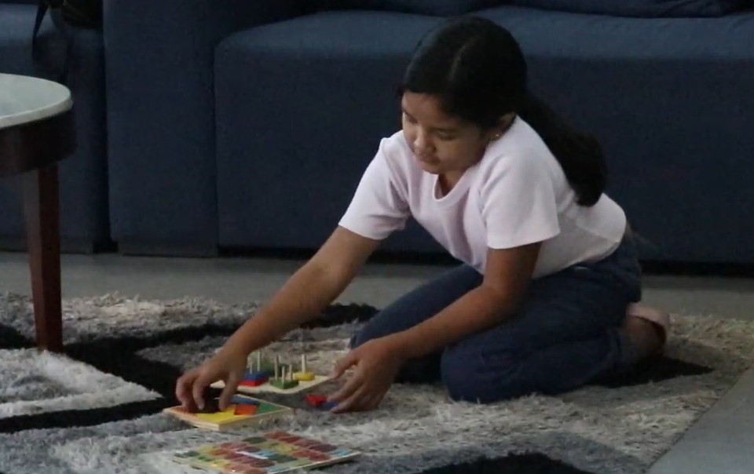

What are Gross Motor Skills?
Gross motor development focuses on large body movements that help children sit, crawl, stand, walk, run, and jump. These are foundational for everyday activities and independence. Our therapy encourages strength, endurance, balance, and coordination through fun, age-appropriate physical activities and movement games.
Key Benefits:
- Supports developmental milestones
- Improves balance and body control
- Strengthens core and limb muscles
- Encourages confidence in movement
- Prepares children for play, school, and sports